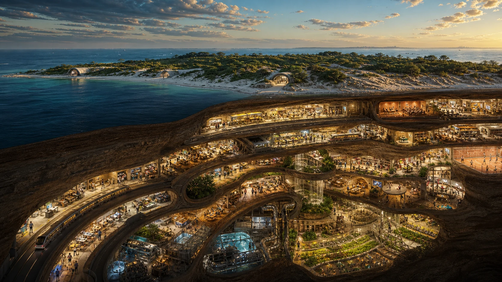

Explore
Enter a model, ask a question, compare assumptions and imagine possibilities.

What could humanity build over many generations? This long-term vision connects practical work today with future habitats, space exploration, science, art and play. The most distant ideas remain speculative.
An idea to explore together. Read the proposal, try the tools and follow the sources. No sign-up needed.
Public proposalThis is Luke's name for a long-term vision of learning, cooperation and exploration at planetary and eventually wider scales. Kardashev refers to a way of thinking about civilisations by the scale of energy they can use. Here, the phrase connects practical projects, simulations and imagined future habitats. It is not an operating event or a promised technology timetable.
Source trail: P10 · The Long Game: Grain by Grain P11 · Micronova and Excursions
The related Grain by Grain documentary project begins with a proposed Dunwich gateway tunnel, then explores connected infrastructure, underground industry and much more distant habitat ideas. One speculative concept is a worldship for 20 million people.
These ideas are at very different stages. Each would need its own engineering, environmental, cultural, financial and public assessment. The site does not claim construction approval or a completed habitat.

Source trail: P10 · The Long Game: Grain by Grain
Workshops, shared projects and simulations could help people practise skills, compare ideas and learn from setbacks. Taking part would be voluntary. A successful simulation would still need to be followed by testing before anyone relied on a real system.
Enter a model, ask a question, compare assumptions and imagine possibilities.
Build competence, validate a component or preserve knowledge another group can use.
Share agreed learning, relationships and useful capabilities without imposing one path.
Source trail: P10 · The Long Game: Grain by Grain
A future worth working towards would include relationships, nature, music, art, curiosity and time to enjoy life. The phrase Joyful Responsible Abundance asks how growing knowledge and capability could support those things. People would remain free to choose different answers.
The games can widen the horizon. The person keeps the choice of whether, where and how to play.
Source trail: P06 · GAJRA Earth Infinity P07 · GAJRA Earth: meeting of minds P10 · The Long Game: Grain by Grain